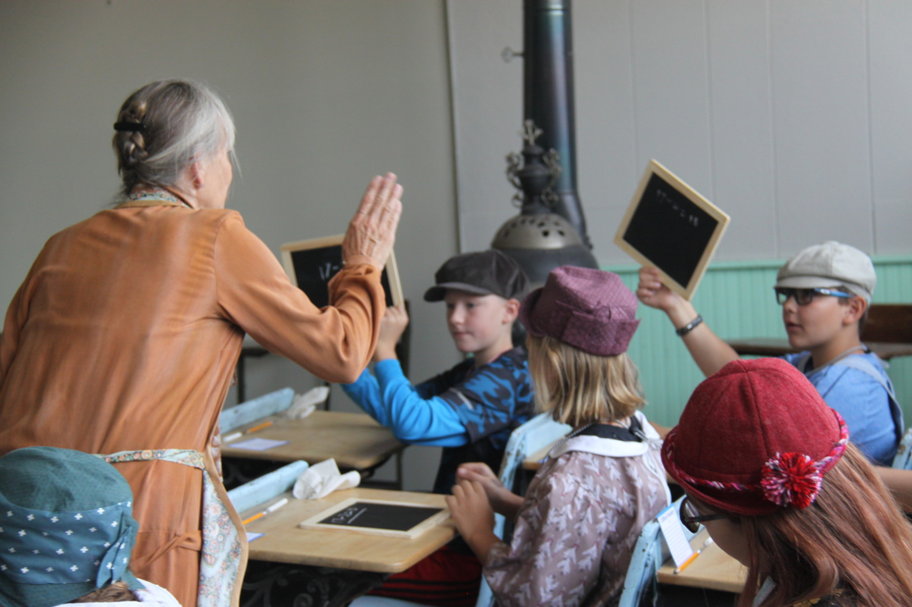

Rigor is our tradition.
Excellence is the result.
John Williams Academy has posted Wyoming's highest average ACT composite score for six consecutive years. Small classes, exacting teachers, and a curriculum built for students who intend to lead - from Cheyenne to college campuses across the country.

Programs of Study
Six departments, each staffed by faculty who hold advanced degrees in the subject they teach and who stay in the classroom rather than move into administration.
Mathematics & Physics
Coursework through multivariable calculus and AP Physics C, with a proof-based track for students headed toward engineering or the sciences.
English & Rhetoric
Close reading, formal debate, and a senior thesis modeled on university seminar work rather than a standard research paper.
Wyoming History & Environmental Studies
Fieldwork across the Laramie Range and the Yellowstone ecosystem grounds classroom study in the state's land, water, and history.
World Languages
Spanish, French, and Mandarin, with an immersion term available beginning in ninth grade.
Computer Science & Engineering
Applied programming, robotics, and systems design, culminating in a capstone project each student defends before faculty.
Fine Arts & Music
Studio art, orchestra, and choir, with an annual juried exhibition open to the Cheyenne community.
How Students Reach the Top of the State
Wyoming families choose John Williams Academy because the results are measurable, not just promised. Every class is capped at eighteen students. Teachers hold graduate degrees in the subject they teach. And students advance by demonstrated mastery, not by the calendar.
- Entrance assessment and interview for every applicant, so classes move at a consistent pace
- Weekly office hours built into the schedule, not offered as an afterthought
- College counseling begins in the ninth grade, with individual application support by junior year
"My daughter's teachers didn't just prepare her for the ACT. They prepared her for the arguments she'd have in a college seminar four years later."
Admissions Are Now Open for Fall 2027
We admit a limited number of students to each grade based on academic record, an entrance assessment, and an in-person interview. Applications are reviewed on a rolling basis beginning in November.